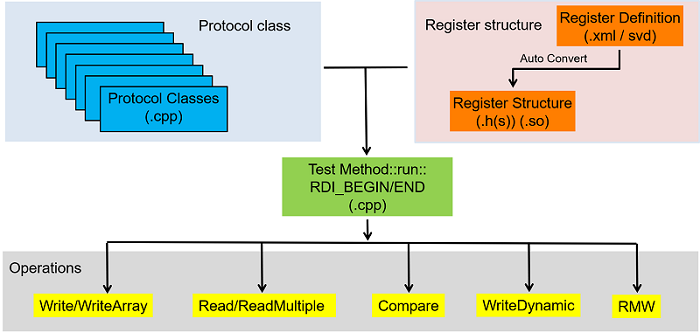

Register Access library
The Register Access (RA) library is bundled together with SmartRDI. It can be used to perform protocol operations, including register access operations.
The Register Access library uses its own member functions and SmartRDI API to perform register operations. See the Example.
Register operations
| Operation | Description |
|---|---|
| write | Write a complete register or registers list into DUT. |
| read | Read a complete register or multiple registers from DUT. |
| compare | Read a complete register from DUT and compare to expected values with masks. |
| writeDynamic | Write a per-site value into DUT in runtime. |
| Read-Modify-Write (RMW) | Write some bit fields of a register and leave the rest of bit fields unchanged at the same time. |
For more information about how to do register operations, see Usage of register operations in test method.
Register Access setups
To do register operations in test methods with SmartRDI, a protocol class must be available and a register structure is optional.
- Protocol class, which is held in a .cpp file.
The RA library already provides transaction definitions of the following protocols:
- I2C
- JTAG
- SPI
For their protocol class templates, see Protocol management.
- Register structure (optional), in which the register information of a device is defined.
Register structures are usually defined in a CMSIS-SVD format based on XML. If you are not to use a register structure, you do not need a SVD file. See Register structure for more information about a CMSIS-SVD XML hierarchy.
The overview of register access setups:

Examples
Example 1
RDI_BEGIN();
// Write register
RA_WRITE(0x1234, 0x55);
// Read a register under ID : READ_ID_1
RA_READ("READ_ID_1", 0x1234);
// Read a register and compare against expected value without mask
RA_COMPARE(0x1234, 0x55);
// Read a register and compare against expected value with mask
RA_COMPARE(0x1234, 0x55, 0xFE);
// Write run time per site data
RA_WRITE_DYNAMIC("DYN_ID_1", 0x1234);
// Read a register again
RA_READ("READ_ID_2", ADDR1);
// Compare by reading register
RA_COMPARE("COMP_ID_1", ADDR1, DATA1);
rdi.wait(10 ms);
RDI_END();Example 2
RA operations with register structure definitions
MultiSite<ULONG64> dynData;
dynData[0] = 0x7E; dynData[1] = 0x01;
RA_SET_DYNAMIC_DATA("DynID1", dynData);
RDI_BEGIN();
rdi.dc().pin("VDD").vForce(3.3).execute();
reg.PERIPHERAL0().REGISTER0().setValue(0x5E).write(); // Write Register
reg.PERIPHERAL0().REGISTER1().setField_FIELDA(1).write(); // Write Field (RMW)
reg.PERIPHERAL0().REGISTER1().read("readID1"); // Read Register
reg.PERIPHERAL0().REGISTER0().setValue(0x5E).compare("CompareID1"); // Read and Compare
reg.PERIPHERAL0().REGISTER2().writeDynamic("DynID1"); // Write a per site runtime register value
// Other RDI operations
rdi.wait(2 ms);
rdi.dc("rdiID1").pin("D1").iForce(0).vMeas().execute();
...
RDI_END();
ULONG64 regValue = RA_GET_READ_RESULT("readID1");
bool comparePF = RA_GET_COMPARE_RESULT("CompareID1").getPassFail()
Functional changes
- Introduced in SmartRDI 7.6.0